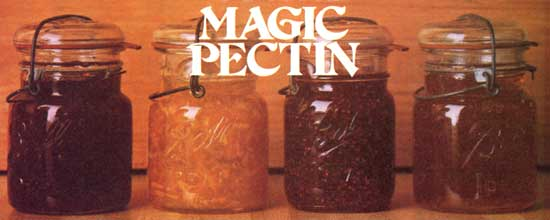

Now you can make jams and jellies with whatever kind-and amount-of sweetener you want!
"I am fascinated by this pectin. I wish I could call in ail my books and change all the recipes for jellies so that they could be made with this product and much less sugar."
Euell Gibbons
Ol' Euell wrote the above remark after his diabetic brother Joe showed the master forager how to make all the jams and jellies he wanted . . . without using sugar! Euell was excited by his sibling's discovery because it meant his own toast coverings could now be both more healthful (especially when you consider that, odd as it sounds, a tablespoonful of ordinary jelly contains more sugar than does a tablespoonful of dry sugar!) and tastier. ('The wild foods expert had "long deplored the necessity of drowning delicate wild flavors in great overloads of sugar".)
And what is this gelling agent . . . a substance so amazing that MOTHER'S jam-making staffers have nicknamed it the Magic Pectin? Well, its "real" name-unpretentiously enough-is Low Methoxyl Pectin, and it's an absolutely harmless cooking ingredient that's made from the inner peels of citrus fruits (instead of-vegetarians please note-from animal products as are ordinary commercial pectins). And, better yet, L.M. gels with the aid of small amounts of calcium . . . rather than large quantities of sugar.
Not only that, but Magic Pectin is also unbelievably easy to use. Just take a look at the "new" jellymaking technique.
Step 1. Prepare two separate water solutions: one made with four tablespoons of pectin per quart of liquid, and the other using one-half teaspoon of calcium (we use the healthful organic mineral, dicalcium phosphate) per cup of water. This is actually the most difficult step of the entire operation, because neither substance dissolves all that easily. You'll probably have to use a blender and dump each agent into a batch of swirling water. However, you can mix the solutions in quantity and keep 'em stored in your fridge. (Magic Pectin and water will gel in the icebox but still be perfectly "fit" for use. The calcium mix, though, settles out a bit in storage and will need some further blending before it's used.)
Step 2. Clean and prepare your fruit as you would for any jam- or jellymaking operation.
Step 3. Sterilize your jars and lids.
Step 4. Heat your fruit or juice in a large saucepan and add honey, artificial sweetener, or sugar to taste. (MOTHER'S "jammers" regularly use one tablespoon of honey-instead of the standard one cup of sugar-with each cup of fruit or juice . . . but you don't have to use any sweetener at all!)
Step 5. When this mixture reaches a gentle boil (no lengthy, ester-destroying stewing needed here), stir in one part of L.M. solution to every four parts of fruit. Then just bring the mixture back to bubbling and mix in one teaspoonful of the calcium liquid per cup of fruit.
Step 6. Your jam is done. All you have to do now is jar and seal the delicacy. (NOTE: Because the spread does not contain large amounts of sugar-which acts as a preservative as well as a sweetener-you should not paraffin-seal these products. Use a normal hot-pack procedure-inverting the filled jars for a 20-minute cooling period after sealing-or process the filled containers for 10 minutes in a boiling-water bath.)
Now, that's easy! No tedious cookin' down of your fixin's, and no testing spoonfuls of jelly until the instant your treat finally "sheets". What's more, if your batch-or a sample cooled in the fridge-doesn't gel quite hard enough the first time, simply reheat and "firm it up" with a bit more calcium mix (and make a note for your next spread-cooking occasion).
And boy, does Magic Pectin work! One of MOTHER'S helpers has made the "strawberriest" (instead of "sugariest") jam you could ever eat . . . another staffer has concocted jelly out of everything from delicate elderberry flowers to sassafras roots. Why, of Euell even created a "magic pectin" frozen-orange-juice jelly!
The wonder getter is affordable, to boot. In fact, Walnut Acres-the only retail distributor of Magic Pectin-has decided to give MOTHER'S readers an exclusive, onetime introductory offer.
Here's the good-until-1980 deal: Eight ounces of L.M. pectin (enough for four dozen pints of jelly!) along with the required one ounce of dicalcium phosphate costs you only $6.00, while a one-pound/ two-ounce pair of packets of the jammakers is a mere $9.00 (these charges include shipping and handling). To take advantage of the special prices, send your order and check to Walnut Acres, Dept. TMEN, Penns Creek, Pennsylvania 17862.
Folks, we know it's late in the growing season, but earlier this summer-because of a lemon freeze in California-Walnut Acres was plumb out of the precious pectin. MOTHER came to the Pennsylvania health food store's rescue by helping it track down a new supplier, so the folks there are now very kindly returning the favor by offering you their products at economical "pre-freeze" rates.
Besides, there's plenty of good jamming time left (try using elderberries, grapes, quinces, apples, and plums, for instance) ... so don't wait. Try this amazing pectin now and-come next season-you won't use anything else!
EDITOR'S NOTE: Euell and Joe Gibbons first announced this discovery to the world in their fascinating and informative book, Feast on a Diabetic Diet ($3.95, David McKay Company), available through your local bookstore orfor the listed price plus 95 cents shipping and handling-from Mother's Bookshelf, P.O. Box 70, Hendersonville, North Carolina 28739..
|
 |
|
|